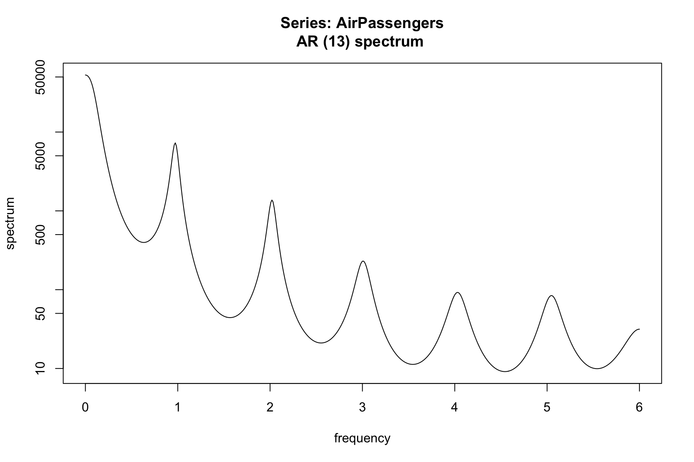
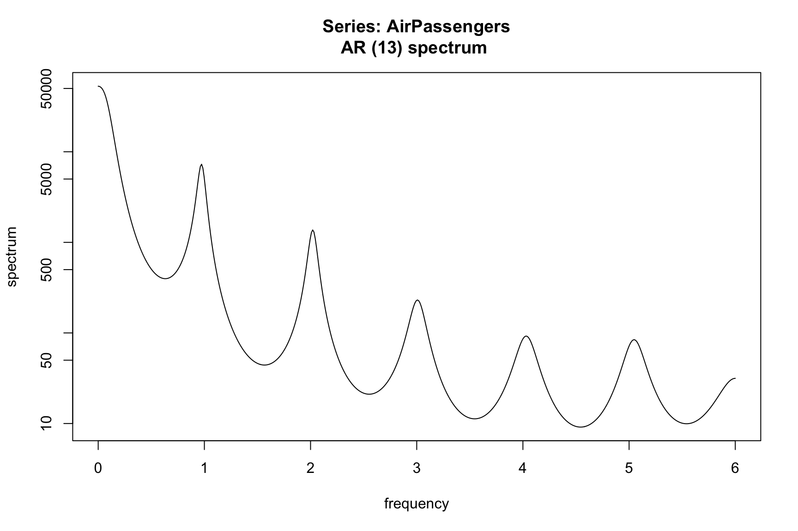
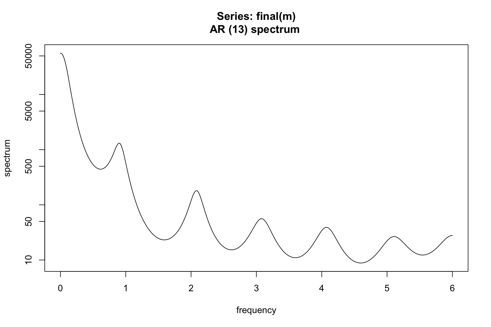

spec.ar(AirPassengers, order = 13)
You are reading an early draft of Seasonal Adjustment in R. This chapter is currently a dumping ground for ideas, and we don’t recommend reading it.
This chapter will be broken up into relevant pieces that construct a good seasonal adjustment. Yet, it is the sum of these parts that ultimately comprise a quality adjustment and it is difficult to completely break them up in a vacuum. A Quality of seasonal adjustment should eliminate residual seasonality and calendar effects, exhibit stability and smoothness, and have no significant seasonal or trading day effects. Different users have a different definition of ‘quality’ that depends on their end goals and their end users of a seasonal adjustment. For example, a federal statistical agency, who is concerned about the users of their seasonal adjustments, may have very different definition of quality compared with a single analyst who is interested in only long-term trend.
Another consideration is the span of your series that is required to produce a quality adjustment…
Residual seasonality plays a crucial role in determining the quality of a seasonal adjustment. Residual seasonality refers to the presence of remaining seasonal patterns or fluctuations in the seasonally adjusted series or its residuals. It indicates that the seasonal adjustment may not have fully removed all the seasonal effects from the data. If residual seasonality is present in the adjusted series, it can lead to biased or misleading analysis and forecasts. It implies that there are still systematic patterns or cycles left in the data, which can hinder accurate interpretation and decision-making. There are many ways to test for residual seasonality. Three prominent ones are (I THINK THIS IS A GOOD PLACE TO ADD A REFERENCE TABLE THAT LISTS THESE THREE METHODS ALONG WITH PROS, CONS, IMMEDIATE INTERPRETATIONS. I THINK MANY READERS WILL JUST WANT TO KNOW HOW TO IDENTIFY RESIDUAL SEASONALITY AND MATCH UP A TEST WITH THEIR SKILL-SET AND THEN SEE HOW TO APPLY IT)
We start with visual inspection of the spectrum of a series. For those unfamiliar with spectral analysis of a time series, the following discussion is intended to be accessable to all trying to perform seasonal adjustment. Hence, we take some liberies with language an interpretation in an effort to make the discussion accessible. For example, we use the term spectrum to refer to the theoretical construct as well as the estimated periodogram. We note here that we will use a parametric AR representation to estimate the spectrum of a process. This is the easiest and most straight forward way to get smooth yet sensible empirical specral estimates for the everyday user. Peaks in the spectrum indicate significant influence to your series of a sin/cos curve of the corresponding frequency. For example, looking at the spectrum of the AirPassengers series we see large peaks at frequencies 1/12, 2/12, 3/12, …
spec.ar(AirPassengers, order = 13)
We know that X-11 with automatic modeling and automatic filter identification performs a good seasonal adjustment. If we look at the spectrum of the seasonally adjusted series, the peaks have been removed.
Let’s intentionally perform a poor seasonal adjustment and see the effect on the spectrum of the seasonally adjusted series.
require(seasonal)
m <- seas(AirPassengers, transform.function = "none", x11 = "", x11.seasonalma = 'stable')
spec.ar(final(m))
Here we see peaks remaining the the final seasonal adjustment. This is a clear indication of lack of quality and something needs to be done to improve the adjustment.
The QS statistics check for positive autocorrelation at the seasonal lags. The null hypothesis is that the autocorrelation is zero, indicating no seasonal autocorrelation. Hence, a small p-value indicates residual seasonality.
Let \(\hat{\gamma}(h)\) be the estimated autocorrelation function of a differenced time series. The QS statistic for a montly time series is \[ QS = n(n+2)\left(\frac{\hat{\gamma}(12)^2}{n - 12} + \frac{\hat{\gamma}(24)^2}{n - 24}\right) \] For a quarterly series replace the 12s and 24s with 4s and 8s. The value QS is approximately chi-squared with 2 degrees of freedom. The seasonal package provides functionality to immediately look at the QS table from the UDG file. We will breakdown what all these tests and p-values are
m <- seas(AirPassengers)
qs(m)
#> qs p-val
#> qsori 167.64858 0.0000
#> qsorievadj 203.07731 0.0000
#> qsrsd 0.00000 1.0000
#> qssadj 0.00000 1.0000
#> qssadjevadj 0.00000 1.0000
#> qsirr 0.00000 1.0000
#> qsirrevadj 0.00000 1.0000
#> qssori 115.08988 0.0000
#> qssorievadj 135.11320 0.0000
#> qssrsd 0.36904 0.8315
#> qsssadj 0.00000 1.0000
#> qsssadjevadj 0.00000 1.0000
#> qssirr 0.00000 1.0000
#> qssirrevadj 0.00000 1.0000